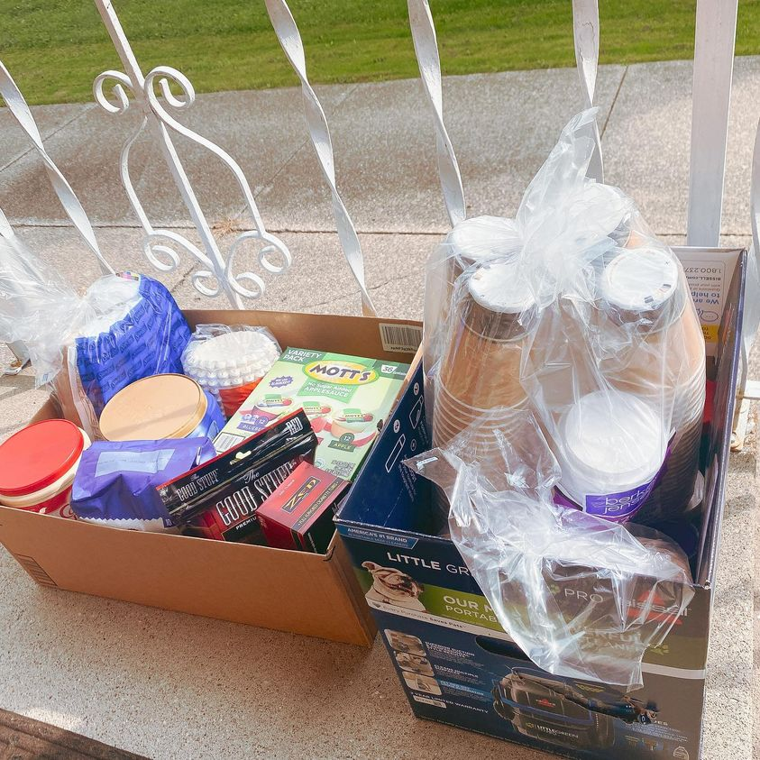

Timeline photos
I recently posted a list of items we use during church on Sunday mornings at the Church of the Nomadic Spirit. And sure enough, a mind-blowingly kind supporter went out and bought every single thing on the list.
And that’s just the most grand donation. Many people brought parts of the list.
I certainly didn’t expect someone to buy everything on the list. But I also wasn’t surprised. You guys do that kind of overwhelming kindness all the time.
Your kindness shines so bright that I can barely look it in the eye. I’m deeply humbled and eternally grateful for all you do for our homeless neighbors.
Thank you. Thank you. Thank you.